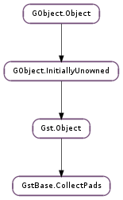

| static | new() |
| available() | |
| clip_running_time(cdata, buf, outbuf, user_data) | |
| event_default(data, event, discard) | |
| flush(data, size) | |
| peek(data) | |
| pop(data) | |
| query_default(data, query, discard) | |
| read_buffer(data, size) | |
| remove_pad(pad) | |
| set_flushing(flushing) | |
| set_waiting(data, waiting) | |
| start() | |
| stop() | |
| take_buffer(data, size) |
None
None
| Name | Type | Access |
|---|---|---|
| object | Gst.Object | r |
| stream_lock | GLib.RecMutex | r |
Bases: Gst.Object
Manages a set of pads that operate in collect mode. This means that control is given to the manager of this object when all pads have data.
Last reviewed on 2011-10-28 (0.10.36)
| Returns: | a new GstBase.CollectPads, or None in case of an error. |
|---|---|
| Return type: | GstBase.CollectPads |
Create a new instance of GstBase.CollectPads.
MT safe.
| Returns: | The maximum number of bytes queued on all pads. This function returns 0 if a pad has no queued buffer. |
|---|---|
| Return type: | int |
Query how much bytes can be read from each queued buffer. This means that the result of this call is the maximum number of bytes that can be read from each of the pads.
This function should be called with pads STREAM_LOCK held, such as in the callback.
MT safe.
| Parameters: |
|
|---|---|
| Return type: |
Convenience clipping function that converts incoming buffer’s timestamp to running time, or clips the buffer if outside configured segment.
| Parameters: |
|
|---|---|
| Return type: |
Default GstBase.CollectPads event handling that elements should always chain up to to ensure proper operation. Element might however indicate event should not be forwarded downstream.
| Parameters: |
|
|---|---|
| Returns: | The number of bytes flushed This can be less than size and is 0 if the pad was end-of-stream. |
| Return type: |
Flush size bytes from the pad data.
This function should be called with pads STREAM_LOCK held, such as in the callback.
MT safe.
| Parameters: | data (GstBase.CollectData) – the data to use |
|---|---|
| Returns: | The buffer in data or None if no buffer is queued. should unref the buffer after usage. |
| Return type: | Gst.Buffer |
Peek at the buffer currently queued in data. This function should be called with the pads STREAM_LOCK held, such as in the callback handler.
MT safe.
| Parameters: | data (GstBase.CollectData) – the data to use |
|---|---|
| Returns: | The buffer in data or None if no buffer was queued. You should unref the buffer after usage. |
| Return type: | Gst.Buffer |
Pop the buffer currently queued in data. This function should be called with the pads STREAM_LOCK held, such as in the callback handler.
MT safe.
| Parameters: |
|
|---|---|
| Return type: |
Default GstBase.CollectPads query handling that elements should always chain up to to ensure proper operation. Element might however indicate query should not be forwarded downstream.
| Parameters: |
|
|---|---|
| Returns: | A sub buffer. The size of the buffer can be less that requested. A return of None signals that the pad is end-of-stream. Unref the buffer after use. |
| Return type: |
Get a subbuffer of size bytes from the given pad data.
This function should be called with pads STREAM_LOCK held, such as in the callback.
MT safe.
| Parameters: | pad (Gst.Pad) – the pad to remove |
|---|---|
| Returns: | True if the pad could be removed. |
| Return type: | bool |
Remove a pad from the collection of collect pads. This function will also free the GstBase.CollectData and all the resources that were allocated with GstBase.CollectPads.add_pad ().
The pad will be deactivated automatically when pads is stopped.
MT safe.
| Parameters: | flushing (bool) – desired state of the pads |
|---|
Change the flushing state of all the pads in the collection. No pad is able to accept anymore data when flushing is True. Calling this function with flushing False makes pads accept data again. Caller must ensure that downstream streaming (thread) is not blocked, e.g. by sending a FLUSH_START downstream.
MT safe.
| Parameters: |
|
|---|
Sets a pad to waiting or non-waiting mode, if at least this pad has not been created with locked waiting state, in which case nothing happens.
This function should be called with pads STREAM_LOCK held, such as in the callback.
MT safe.
Starts the processing of data in the collect_pads.
MT safe.
Stops the processing of data in the collect_pads. this function will also unblock any blocking operations.
MT safe.
| Parameters: |
|
|---|---|
| Returns: | A sub buffer. The size of the buffer can be less that requested. A return of None signals that the pad is end-of-stream. Unref the buffer after use. |
| Return type: |
Get a subbuffer of size bytes from the given pad data. Flushes the amount of read bytes.
This function should be called with pads STREAM_LOCK held, such as in the callback.
MT safe.